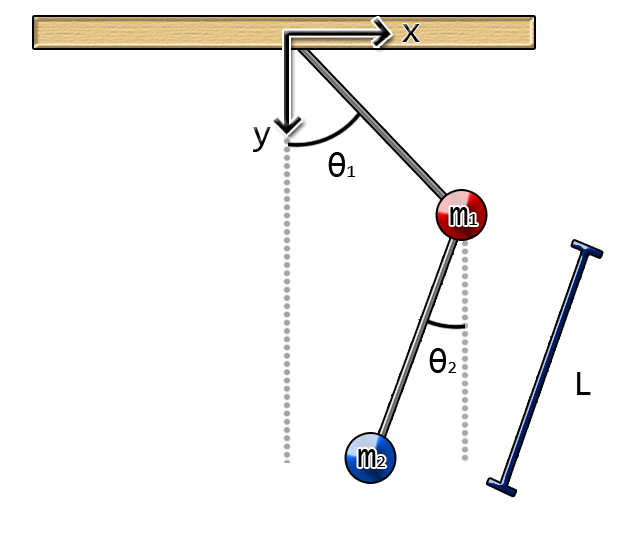

DP Explorer
DP Explorer allows you to explore the chaotic dynamics of the double pendulum. These dynamics are the foundation of the double pendulum fractal.
Select a point in the image with a click and then click the play button to watch an animation of the double pendulum.
When you open this dialog there is a predefined double pendulum map, but you can easily load a new one by saving an image of the double pendulum fractal (on BMP format), and then loading it with the DP Explorer dialog.
So, first, what's is the double pendulum map anyway?

The
double pendulum is a system formed by two pendulums like the ones in
the figure. Each pendulum has an initial angle,
θ1 and θ2. Then we let the pendulum move,
and surprise! The movement of the pendulum is completely chaotic. To
plot the chaotic movement of the pendulum we can make a map where we
plot the result of the movement of the double pendulum against the
initial angles. In the double pendulum fractal what we do is to check
if a pendulum flips (meaning it's angle is greater than 180°). If it
doesn't flip the pixel is colored black, if it flips then it's
colored according to the time it took to flip. The we get an image
like this:
The DP Explorer dialog let's you visualize this movement depending on the selected initial angles.